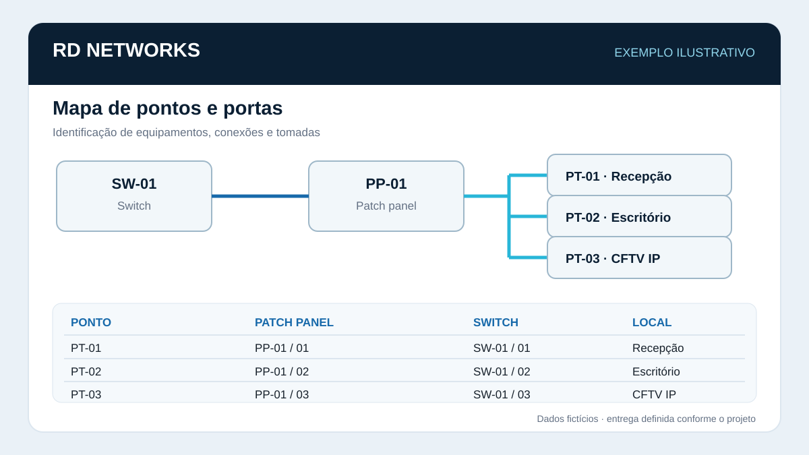
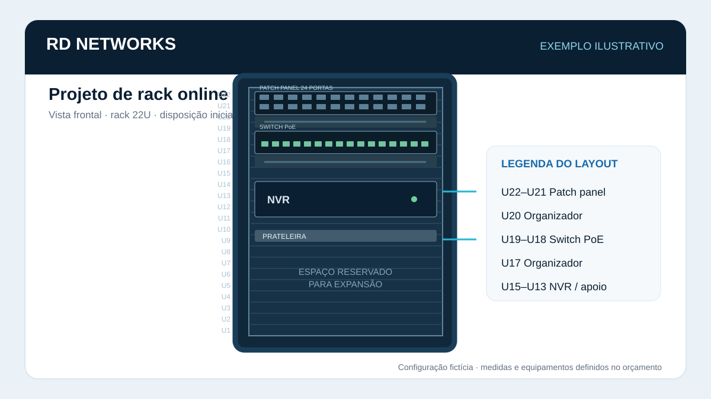

Foto ilustrativa · Pexels (Brett Sayles)01
Foto ilustrativa · Pexels (Brett Sayles)01Cableado estructurado
Tendido, organización y terminación de cables y puntos de red.
INFRAESTRUCTURA DE REDES · BRASIL · SERVICIOS INTERNACIONALES BAJO CONSULTA
RD Networks es una empresa brasileña que trabaja con infraestructura física de redes y apoyo técnico de campo. Atendemos consultas de empresas, integradores y equipos de TI que necesitan apoyo en proyectos o servicios puntuales.
Los precios y la disponibilidad se confirman después de analizar el proyecto.
SERVICIOS
Trabajos de infraestructura física y documentación técnica. El alcance se acuerda antes de comenzar.
Nota sobre las imágenes: algunas fotografías son ilustrativas y proceden de bancos de imágenes; no representan necesariamente trabajos realizados por RD Networks.
Nota sobre las imágenes: algunas fotografías son ilustrativas y proceden de bancos de imágenes; no representan necesariamente trabajos realizados por RD Networks.
Foto ilustrativa · Pexels (Brett Sayles)01Tendido, organización y terminación de cables y puntos de red.
 Foto ilustrativa · Pexels (Brett Sayles)02
Foto ilustrativa · Pexels (Brett Sayles)02Instalación, organización física, identificación y adecuación de racks.
 Foto ilustrativa · Pexels (Field Engineer)03
Foto ilustrativa · Pexels (Field Engineer)03Conectores, keystones y terminación de puntos de red.
 Foto ilustrativa · Pexels (Phaeng _yo)04
Foto ilustrativa · Pexels (Phaeng _yo)04Infraestructura física, cableado de datos y montaje de cámaras, según el alcance acordado.
 Foto ilustrativa · Pexels (Brett Sayles)05
Foto ilustrativa · Pexels (Brett Sayles)05Tendido de fibra según el recorrido, las condiciones y la evaluación técnica.

06Mapeo de puntos, puertos, equipos y conexiones. Los ejemplos visuales son ilustrativos.
 Foto ilustrativa · Pexels (Brett Sayles)07
Foto ilustrativa · Pexels (Brett Sayles)07Pequeñas adecuaciones relacionadas con la infraestructura de TI, sujetas a evaluación previa.
ALIANZAS · APOYO TÉCNICO B2B
Buscamos establecer relaciones con empresas de TI, integradores, proveedores y equipos técnicos que necesiten apoyo para tareas de infraestructura física de redes.
PORTAFOLIO TÉCNICO
Las imágenes y diagramas marcados como ejemplos ilustrativos no representan trabajos realizados para un cliente específico.

 Foto ilustrativa · Pexels (Sergei Starostin)
Foto ilustrativa · Pexels (Sergei Starostin)PROCESO DE TRABAJO
Primero entendemos la necesidad; después se evalúan las condiciones y se presenta una propuesta.
Indique el país, la ciudad, el servicio y la cantidad aproximada de puntos o equipos.
Revisamos la información disponible y las condiciones necesarias para el servicio.
El alcance, los valores, los plazos, los materiales y los gastos aplicables se detallan por escrito.
El trabajo solo se agenda después de acordar las condiciones y confirmar la disponibilidad.
CONTACTO COMERCIAL
Para consultas internacionales, contacte por correo electrónico. Envíe el país, la ciudad, el alcance aproximado y el plazo esperado.
Correo: rdnetworks2026@gmail.com
WhatsApp: +55 27 99255-1513
No se confirma disponibilidad, precio ni contratación hasta que ambas partes acuerden por escrito el alcance y las condiciones.
Puede copiar esta lista y enviarla por correo:
INFORMACIÓN IMPORTANTE
RD Networks tiene base en Brasil. Cualquier servicio presencial fuera de Brasil depende de evaluación del proyecto, disponibilidad, requisitos locales, logística y condiciones acordadas. No asumimos gastos ni compromisos financieros de terceros sin aceptación expresa y por escrito. Cada propuesta se prepara según el alcance, el país, la logística y la disponibilidad.